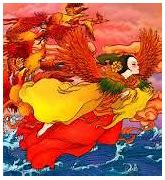

Jingwei es un personaje femenino en la mitología china. Originalmente, era la hija del emperador Yandi. A una corta edad, sufrió un trágico destino en el Mar del Este. A Jingwei le encantaba observar los amaneceres y deseaba tener una vista aún mejor de ellos. Sin embargo, al aventurarse en el mar, una tormenta agitó las olas y destrozó su pequeño barco, tragándosela sin dejar rastro. Después de su muerte, Yandi intentó recuperar los restos del barco de su hija, pero solo encontró fragmentos en la orilla.
Un día, una diosa emergió del mar en forma de ave, decidida a vengarse. Esta diosa era Jingwei, renacida. Llevaba rocas y pequeños pedazos de montañas cercanas al mar para arrojarlos al agua. Su objetivo era llenar el mar por completo, para que otros no sufrieran como ella lo había hecho. A pesar de que el mar se burló de ella, diciendo que no podría llenarlo ni en un millón de años, Jingwei afirmó que lo haría en diez millones o incluso cien millones de años. Su determinación obstinada y perseverancia la convirtieron en un símbolo de superar posibilidades aparentemente imposibles.
La expresión china “Jingwei llenando el mar” se refiere a esta leyenda y representa la voluntad inquebrantable frente a desafíos aparentemente insuperables.
